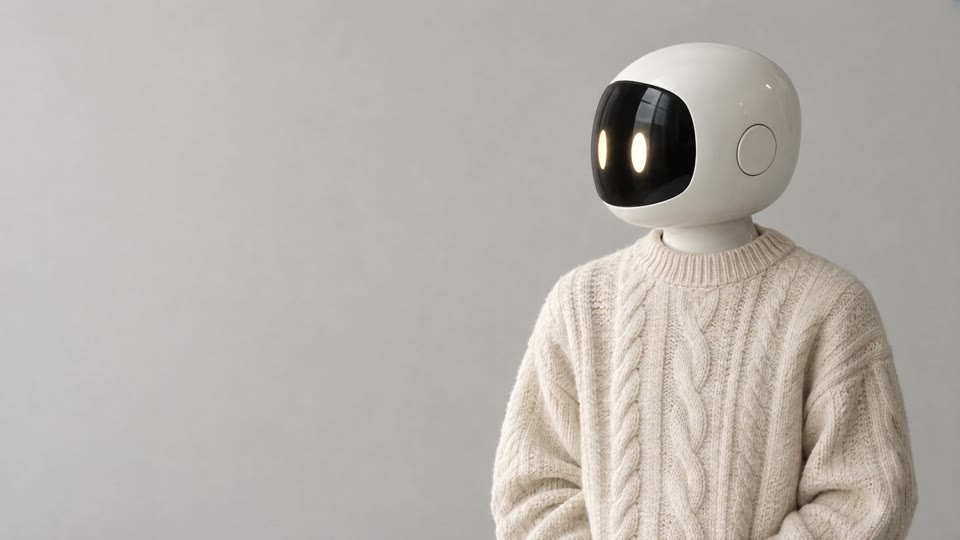
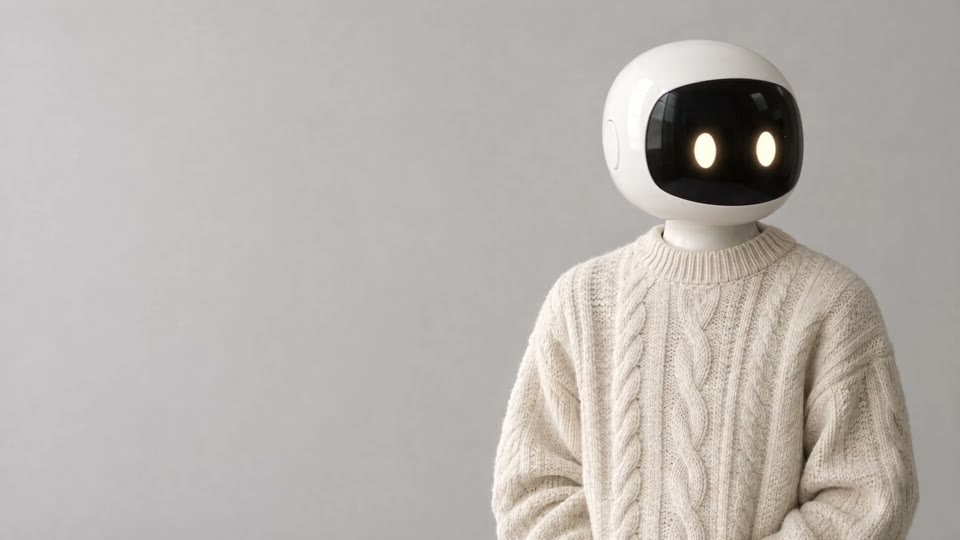
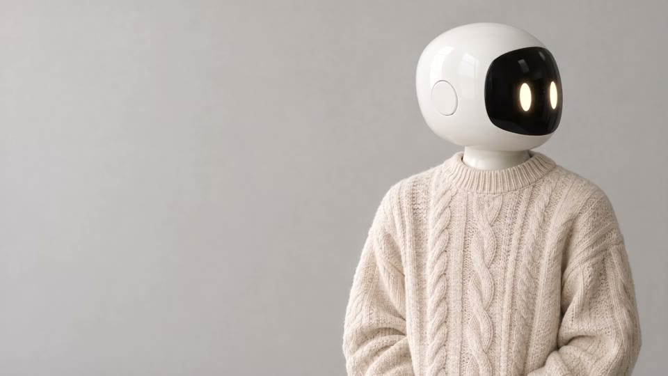

Sereno é um robô de companhia pra casa.
Cerâmica por fora, lã por cima.
|
A maioria das máquinas responde rápido demais. O Sereno espera você terminar a frase, vira a cabeça na sua direção e só então decide se precisa dizer alguma coisa.
01
Olha pra quem fala
Seis microfones localizam a voz e a cabeça gira até você, sem pressa e sem barulho de motor.
02
Lembra do que importa
Remédio das oito, a planta que precisa de água, o nome do vizinho. Tudo guardado no próprio robô, sem nuvem.
03
Sabe ficar quieto
Quando a casa está em silêncio, ele também fica. Nada de avisos às três da manhã nem conversa forçada.


